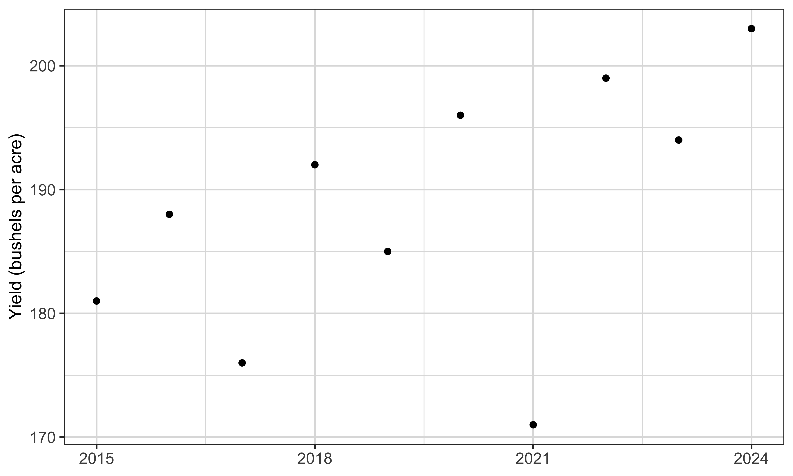
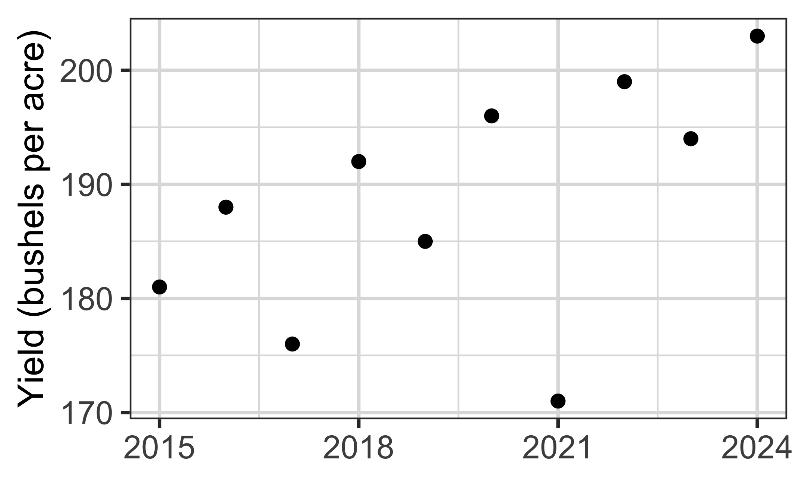

A Quarto document can be rendered to a slide deck instead of a page. These lecture slides are made that way. An AI assistant can turn your analysis into a deck in a minute: it knows every slide feature and every option. What it cannot do is:
Those are your job. So today is about:
This lecture does not list slide options. When you want one, ask the AI for the effect (“reveal the bullets one at a time”) and check it in the rendered deck.
tidyverse and here packages. Install any you do not have yet; it is a one-time step per computer (see the packages slide in Chapter 1).A report and a talk can come from the same analysis, but they are read differently:
| Report (HTML page) | Talk (slide deck) | |
|---|---|---|
| Who sets the pace | The reader, who can go back | You; the audience cannot go back |
| How much per screen | As much as the argument needs | One point per slide |
| Code | Shown or folded, so the work can be checked | Hidden; the audience sees results |
| Numbers | As precise as needed | Rounded to what can be said aloud |
| Detail and caveats | In the text | In what you say, in speaker notes, or on extra slides after the end |
Important
A deck made by pasting a report into slides fails all five rows. Asking the AI to “make slides from my report” without saying more tends to produce exactly that.
A title such as “Results” tells the audience nothing. A title that states the point tells them what to look for in the figure under it:
| Title as a topic | Title as a sentence |
|---|---|
| Data | We use yields from one farm, 2015 to 2024 |
| Results | Yields rose by about 2 bushels per acre per year |
| Weather | The two lowest years were both drought years |
Reading the titles alone, in order, should tell the whole story of the talk. That is also the quickest check of a deck (see “Checking the result”).
The AI can suggest a message and an outline, and it will, if you do not give one. But its suggestion is a guess about your audience and your purpose, built from the results it can see. Decide the message and the outline yourself, then let the AI build the slides from them.
A deck is a .qmd file like any other. Two things change: the format, and what the headings do.
---
title: "Talk title"
format: revealjs
execute:
echo: false
---
# Section title
## Slide title, written as a sentence
What goes on the slide.
```{r}
#| label: fig-something
code that draws a figure
```| Part | What it does |
|---|---|
format: revealjs |
Render to a slide deck (revealjs is the name of the slide format) |
execute: echo: false |
Hide the code of every chunk: the audience sees results only |
# ... |
A section slide, with the title alone in the middle |
## ... |
A new slide, with this title at the top. Everything below it, up to the next heading, is on that slide |
---
title: "Yields on the home farm"
author: "Your Name"
format:
revealjs:
embed-resources: true
execute:
echo: false
---
## Yields rose by about 2 bushels per acre per year
```{r}
#| label: fig-trend
ggplot(harvest, aes(x = year, y = yield)) +
geom_point() +
geom_smooth(method = "lm", se = FALSE) +
labs(x = NULL, y = "Yield (bushels per acre)")
```
::: {.notes}
The line is a straight-line fit. Mention 2021, the drought year.
:::The {.notes} block holds speaker notes: text you see while presenting, and the audience does not.
The AI will add features to decks. Recognise them, and ask for them by their effect:
| You will see | What it does |
|---|---|
::: {.incremental} around a list |
Bullets appear one at a time |
:::: {.columns} with ::: {.column width="50%"} inside |
Side-by-side columns |
::: {.notes} |
Speaker notes |
## Title {.smaller} |
Smaller text on that slide |
## Title {.scrollable} |
The slide scrolls if it is too long |
::: {.panel-tabset} |
Tabs on one slide, as on these slides |
#| code-line-numbers: "1|2-3" |
Highlights lines of shown code one step at a time |
theme:, logo:, footer: under revealjs: |
The look of every slide |
Anything between the YAML header and the first heading becomes a slide of its own, without a title. A stray sentence, or a comment the AI left there, gives you an empty-looking first slide. Press o in the rendered deck to see all slides at once and spot it.
A figure has two sizes, set by different chunk options:
| Option | What it sets |
|---|---|
fig-width, fig-height |
The size, in inches, of the canvas R draws on. Text is drawn at a fixed size on that canvas. |
out-width |
How much of the slide the finished picture takes up, for example 50%. Everything in it, text included, is scaled together. |
So the size of the axis text on the slide depends on both: a smaller canvas makes the text larger relative to the plot.
Both are shown at the same width on the slide. Only the canvas differs:
fig-width: 10

fig-width: 5

The text on the right is twice as large, because the canvas is half as wide and then scaled up to the same width.
If the axis text is too small to read, the fix is a smaller canvas, not a larger out-width. Ask for the effect and the reason:
Open the rendered .html in a web browser. While presenting:
| Key | What it does |
|---|---|
| right arrow, space | next slide or next step |
| left arrow | back |
| f | full screen |
| o or Esc | overview of all slides; click one to go to it |
| s | speaker view: your notes, the next slide and a timer, in a second window (allow pop-ups if nothing appears) |
| ? | the list of every key |
A PDF copy
To make a PDF of the slides, open the deck in Chrome, press e to switch to print view, and print to PDF. Bullets that appear one at a time are all shown at once.
The way of working with AI from lecture 02-1 applies to decks unchanged: the AI writes into a .qmd (now with format: revealjs), with one plain-English sentence above each chunk, the AI renders it, and you judge the rendered deck, not the chat. Three things differ:
.qmd, so they do not fill the slides.Note
Every request for code still ends with the closing instructions; the full text is under Recommended requests near the end.
The AI knows every slide feature. Your request supplies what it cannot know:
.qmd or which results the deck is built fromembed-resources: trueThe AI has to guess everything in the last slide. A typical result: one slide per section of the report, titles copied from its headings (“Data”, “Results”), code shown on every slide, and a dozen bullets where a figure should be.
An example for a short talk on one farm’s yields:
Make a revealjs deck at talks/farm-talk.qmd from the analysis in
analysis/report.qmd. The audience is farmers at an extension meeting,
who know yields in bushels per acre but no statistics. I have 5
minutes. The message: yields on this farm rose by about 2 bushels per
acre per year, but drought years still fall far below the trend.
Slides, in order, with these titles:
1. "We looked at ten years of yields on one farm": what the data is
2. "Yields rose by about 2 bushels per acre per year": figure of yield
by year with a straight-line fit
3. "Drought years still fall far below the trend": the same figure with
the drought years marked
4. "What this means for planning": three bullets, which I will write
Hide all code. The sentence above each chunk that the last paragraph
asks for goes in the speaker notes of that slide, not on the slide.
Numbers on slides rounded to whole bushels, written as inline R. Add a
last slide titled "Checks", after slide 4, with the checks: number of
years (I expect 10). Use embed-resources: true.
Put the code in my Quarto document talks/farm-talk.qmd, under the
heading "We looked at ten years of yields on one farm", as R code
chunks. Above each chunk, write one plain-English sentence saying what
it does and why. Build every path with here::here(); no setwd(), no
absolute paths. Print each check on its own line as "name of check:
expected X, got Y". Render the document to HTML.Slide 2 as the AI wrote it in the .qmd. The sentence for the chunk is in the speaker notes; the audience sees the title and the figure.
## Yields rose by about 2 bushels per acre per year
```{r}
#| label: fig-trend
#| fig-width: 7
#| fig-height: 4
ggplot(harvest, aes(x = year, y = yield)) +
geom_point() +
geom_smooth(method = "lm", se = FALSE) +
labs(x = NULL, y = "Yield (bushels per acre)")
```
::: {.notes}
Plot each year's yield with a straight-line fit, to show the rise.
:::Check it against the request: the title is the outline’s, the code is hidden by echo: false in the header, the sentence is in the notes. Then check the claim in the title against the data: the slope of the line is what “about 2 bushels per acre per year” says.
Render the deck, open it, and go through it as a member of the audience would:
| Check | How | Why | |
|---|---|---|---|
| 1 | The titles alone tell the story | Press o; read only the titles, in order | If they do not, the audience will not get the message either |
| 2 | Each slide shows evidence for its title | Look at each slide | A title not supported by its slide is a claim with nothing behind it |
| 3 | Every claim in a title is true | Compare with the results in your analysis, and the Checks slide | The AI wrote the titles from your outline; the data may say otherwise |
| 4 | Nothing runs off the bottom of a slide | Step through every slide | The audience cannot scroll |
| 5 | The text in figures can be read | Stand back from the screen, or shrink the browser window to half | Axis text is the most common thing that cannot be read |
| 6 | No code on the slides | Step through | Code is for you, not the audience |
| 7 | The number of slides fits the time | Count them; rehearse with the timer in speaker view | About one minute per slide |
| 8 | It works when sent | Copy only the .html to another folder and open it there |
Without embedded resources, the copy has no styling and every slide runs into one page |
A deck rendered without embed-resources: true, copied to another folder without its _files folder, opens as plain text: titles and bullets one after another on a single white page, no slides. The same deck rendered with embed-resources: true opens as slides wherever it is copied.
Check it before you email a deck or put it on a USB stick for a conference computer.
An AI made this slide for a 10-minute talk to an extension audience:
## Results
```{r}
#| label: results
#| echo: true
#| out-width: 30%
model <- lm(yield ~ year, data = harvest)
summary(model)
ggplot(harvest, aes(x = year, y = yield)) + geom_point()
```
+ We estimated a linear model of yield on year
+ The coefficient on year is positive
+ It is statistically significant at the 5% level
+ The R squared is shown in the output above
+ The figure shows the data
+ Drought years are lower
+ This matters for planningA. Which checks from the last slide does it fail?
B. What would the slide’s title be, written as a sentence?
C. Write the request you would send to fix it.
A. Check 1 and 2: “Results” says nothing, and the slide holds three points (the trend, drought years, planning). Check 4: a full regression summary plus a figure plus seven bullets cannot fit. Check 5: the figure is shown at 30% of the slide width with the default canvas, so its text is tiny. Check 6: echo: true shows the code.
B. Something like “Yields rose by about 2 bushels per acre per year”, with the other points on slides of their own.
C. For example: “Split the slide ‘Results’ into two slides titled ‘<title of the first, as a sentence>’ and ‘<title of the second, as a sentence>’. On each, show only the figure, without code; move the regression summary to the speaker notes, and round the slope to a whole number in the title, written as inline R. Draw the figure on a smaller canvas so its text can be read.” Then the closing instructions.
Copy one, then replace every <...> with what only you know: the audience, the time, the message and the outline. Every request for code ends with the closing instructions.
The lines that end every request for code. Replace the two blanks; leave “expected X, got Y” as it is, because it tells the AI how to print each check:
Put the code in my Quarto document <path to your .qmd>, under the
heading "<heading>", as R code chunks. Above each chunk, write one
plain-English sentence saying what it does and why. Build every path
with here::here(); no setwd(), no absolute paths. Print each check on
its own line as "name of check: expected X, got Y". Render the document
to HTML.A chat assistant cannot render: paste its chunks into your .qmd and render it yourself. An agent in your editor or terminal can do every step.
Make a revealjs deck at <path to the new .qmd> from the analysis in
<path to your analysis .qmd>. The audience is <who, and what they
already know>. I have <number> minutes. The message: <one sentence>.
Slides, in order, with these titles:
<numbered list: each title as a sentence, and what the slide shows>
Hide all code. The sentence above each chunk that the last paragraph
asks for goes in the speaker notes of that slide, not on the slide.
Numbers on slides rounded to <how precise>, written as inline R. Add a
last slide titled "Checks", after the final slide, with the checks:
<checks you know the answer to>. Use embed-resources: true.
Put the code in my Quarto document <path to your .qmd>, under the
heading "<heading>", as R code chunks. Above each chunk, write one
plain-English sentence saying what it does and why. Build every path
with here::here(); no setwd(), no absolute paths. Print each check on
its own line as "name of check: expected X, got Y". Render the document
to HTML.In <path to your .qmd>, the slide "<slide title>" has this problem:
<what is wrong, as seen in the rendered deck>. Change it so that
<what it should look like>. Do not change any other slide.
Put the code in my Quarto document <path to your .qmd>, under the
heading "<heading>", as R code chunks. Above each chunk, write one
plain-English sentence saying what it does and why. Build every path
with here::here(); no setwd(), no absolute paths. Print each check on
its own line as "name of check: expected X, got Y". Render the document
to HTML.| You need to decide or understand | The AI can write |
|---|---|
| Who the audience is, and how long you have | The YAML header for the deck |
| The one message, and the slide titles as sentences | The slides, from your outline |
| What stays out of view: code, details, checks | echo: false, speaker notes, the Checks slide |
| Whether every title is true and every slide readable | Figure sizes, columns, incremental bullets |
| That the deck works when sent | embed-resources: true |
Every deck: decide the audience, time, message and outline before asking. Render it, read the titles alone in the overview, step through every slide as the audience would, check the claims against your analysis, and open a copy sent on its own.